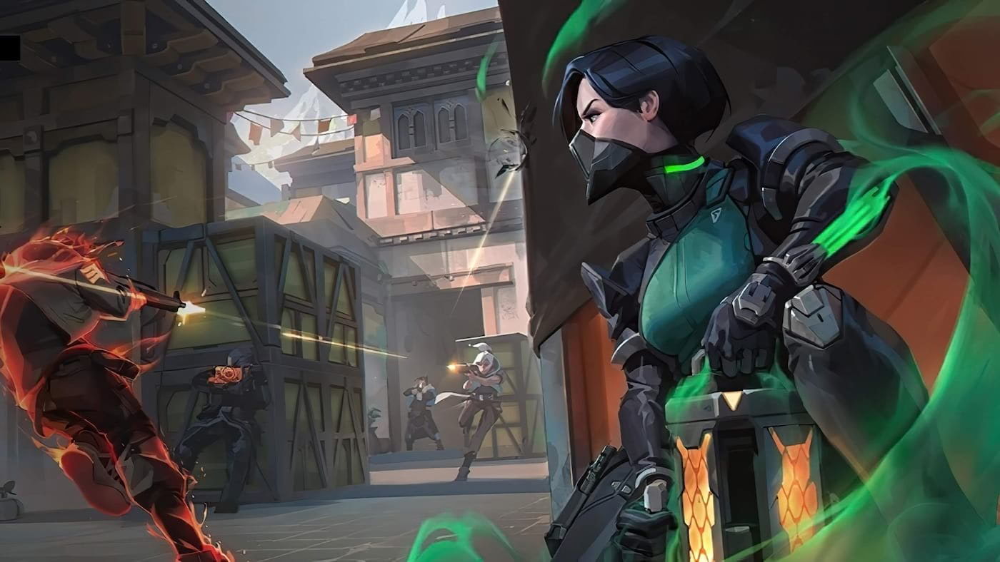

O que é Valorant?
Introdução
Esse artigo traz uma visão geral do jogo Valorant, o FPS tático produzido pela empresa Riot Games. Diferente de outros FPS’s como CS:GO (Counter-Strike: Global Offensive) ou R6 (Rainbow Six Siege), Valorant traz mais do que armas e munição: inclui agentes com recursos versáteis, rápidos e letais. Serão abordadas as características desses agentes, os diferentes tipos de armas, os mapas e um pouco sobre o cenário competitivo, tanto nacional como internacional.
Lançamento do jogo
No primeiro dia de lançamento do beta fechado, em abril de 2020, o jogo fez história quebrando recordes de audiência com 34 milhões de horas assistidas em um único dia e ultrapassando a marca de 1,7 milhão de picos de espectadores simultâneos, um recorde duplo que perde apenas para as finais do campeonato mundial de League of Legends de 2019.
Ao longo do período de testes beta de dois meses, uma média de quase 3 milhões de jogadores se conectaram todos os dias para jogar. Além disso, os fãs assistiram mais de 470 milhões de horas de gameplay de VALORANT na Twitch, o principal serviço e comunidade mundial de entretenimento multiplayer, e no serviço coreano de streaming de vídeo AfreecaTV.
Especificações para rodar o jogo
Configurações recomendadas – 60 quadros por segundo (60 FPS):
- CPU: Intel i3-4150
- GPU: Geforce GT 730
Configurações alto nível – acima de 144 quadros por segundo (+144 FPS):
- CPU: Intel Core i5-4460 3.2GHz
- GPU: GTX 1050 Ti
Configurações mínimas – 30 quadros por segundo (30 FPS):
- CPU: Intel i3-370M
- GPU: Intel HD 4000
Recomendações de hardware:
- Windows 7/8/10 de 64 bits
- 4GB de RAM
- 1GB de VRAM
Como funciona o FPS?
Valorant é um FPS tático 5x5 (cinco jogadores em cada time) que tem como objetivo plantar ou desarmar a Spike (bomba). Os jogadores têm apenas uma vida por rodada e a partida é vencida pela equipe que ganhar 13 rodadas (de 25) primeiro.
Em todas as partidas, os times deverão defender e atacar: o time atacante tem que escoltar a bomba para que ela seja plantada e detonada nos pontos A, B ou C do mapa; se a bomba não for desarmada a tempo pelo time defensor, o time atacante ganha.
O início do jogo é tentar fazer previsões sobre para onde o outro time irá ou tentar enganar e distrair. Se os atacantes puderem plantar a Spike e protegê-la até que ela exploda, eles vencem. Se conseguirem tirar todos os defensores, eles vencem. Se os defensores puderem eliminar todos os ataques ou desativar a Spike se ela estiver plantada, eles vencem.
